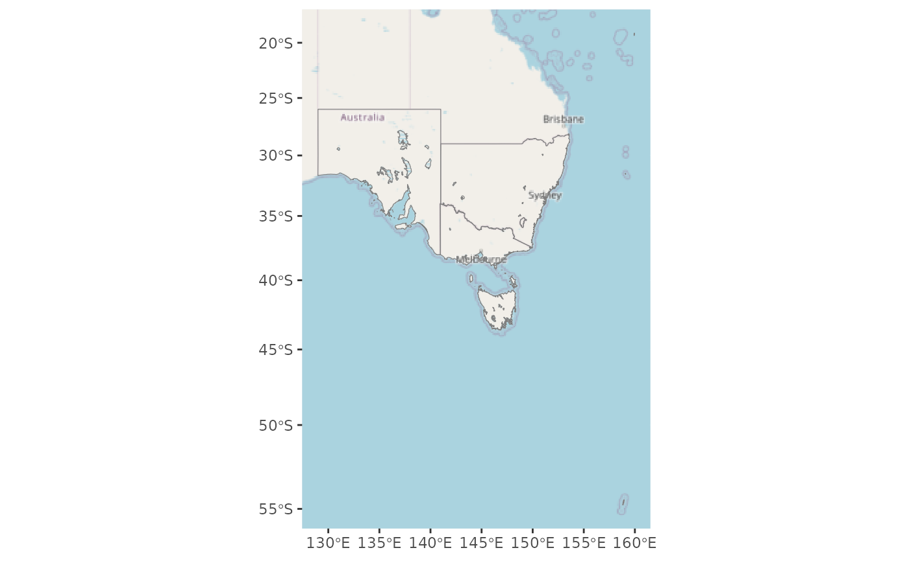
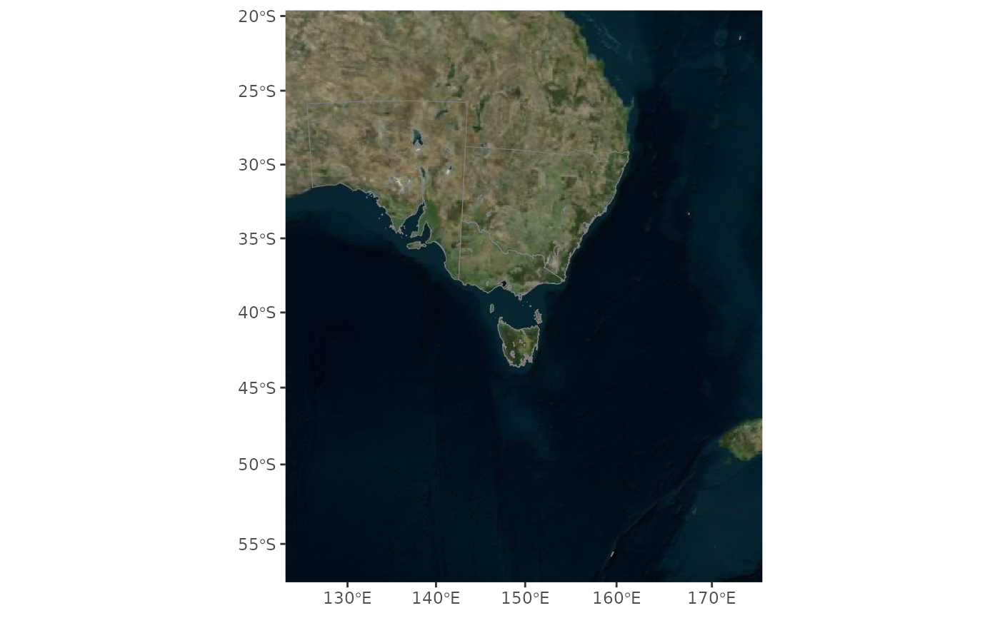
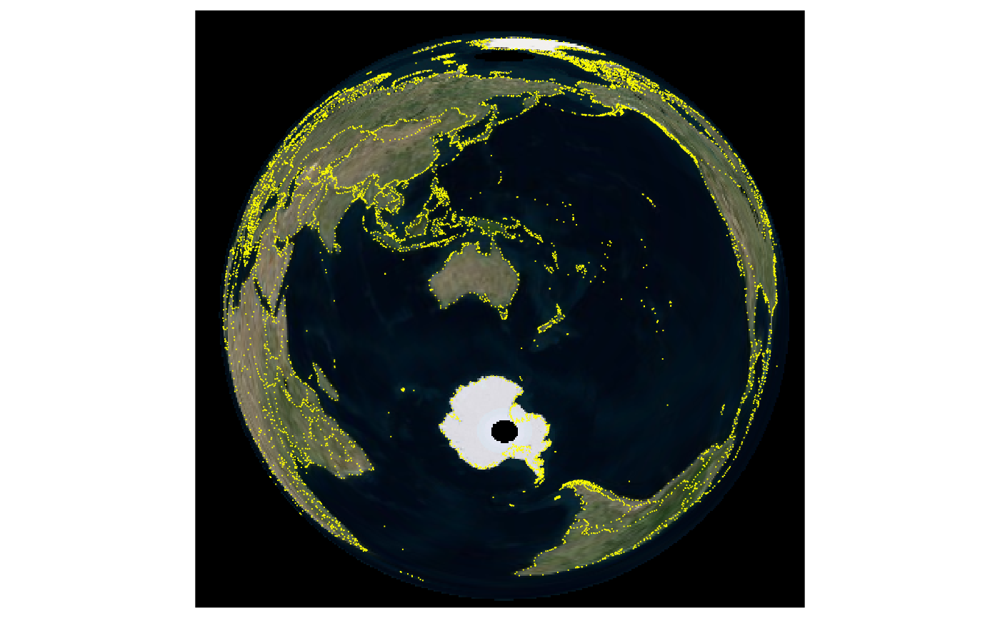
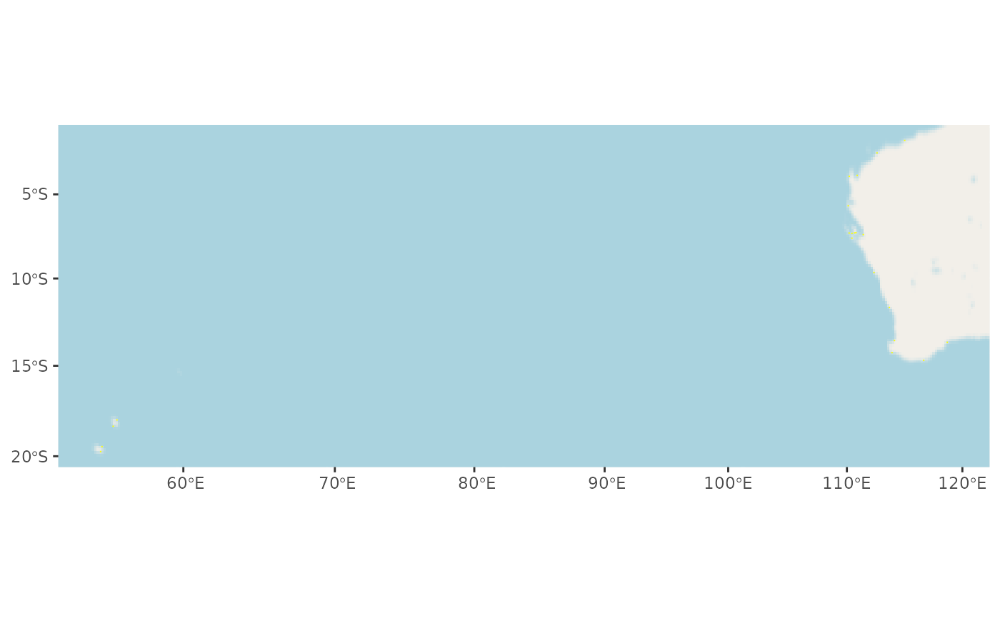
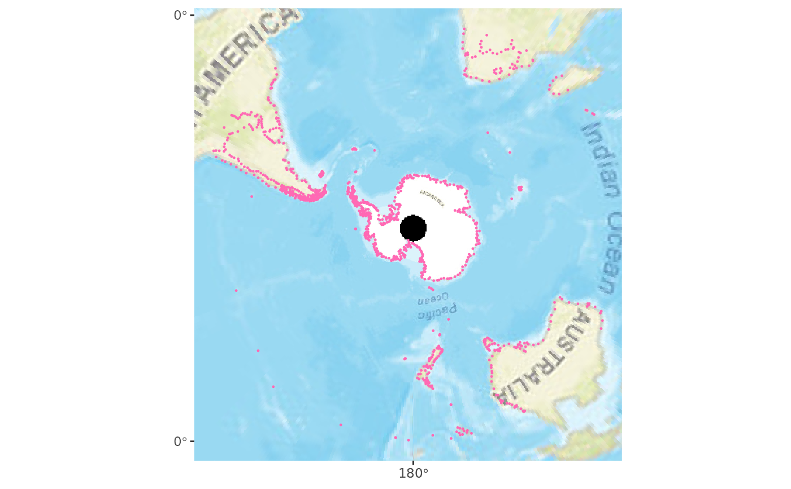

Uses OpenStreetMap or VirtualEarth to add background imagery, or a custom source via 'dsn'. If you are publishing a map using these tiles, make sure to use the proper attribution (e.g., "Copyright OpenStreetMap contributors" when using an OpenStreetMap-based tile set). Ditto for VirtualEarth or any dsn you use.
arcgis_mapserver_imgery()
annotation_gdal(
dsn = c("osm", "virtualearth"),
resample = "bilinear",
interpolate = FALSE,
data = NULL,
mapping = NULL,
alpha = 1
)
GeomGdalAn object of class GeomGdal (inherits from Geom, ggproto, gg) of length 5.
The map source (currently 'osm' or 'virtualearth' are built-in - whatarelief streetmap, or imagery, otherwise use a GDAL DSN)
resample algorithm for the GDAL warper
Passed to grid::rasterGrob()
Specify data and mapping to use this geom with facets
Use to make this layer semi-transparent
A ggplot2 layer
# \donttest{
library(ggplot2)
data(iw)
ggplot() +
annotation_gdal() +
geom_sf(data = sf::st_transform(iw, "EPSG:3857"), fill = NA, col = "grey50")

ggplot() +
annotation_gdal("virtualearth") +
geom_sf(data = iw, fill = NA, col = "grey50")

pts <- do.call(cbind, maps::map(plot = FALSE)[1:2])
pts <- pts[!is.na(pts[,1]), ]
pts <- pts[seq(1, nrow(pts), length.out = 8000), ]
sf <- sf::st_sf(geom = sf::st_sfc(sf::st_multipoint(pts), crs = "OGC:CRS84"))
ggplot() +
annotation_gdal(dsn = "virtualearth") +
geom_sf(data = sf::st_transform(sf, "+proj=laea +lon_0=147 +lat_0=-42"),
fill = NA, col = "yellow", pch = ".")

pts2 <- pts[pts[,1] > 50 & pts[,1] < 120 & pts[,2] < -20 & pts[,2] > -45, ]
sf <- sf::st_sf(geom = sf::st_sfc(sf::st_multipoint(pts2), crs = "OGC:CRS84"))
ggplot() +
annotation_gdal(dsn = "osm") +
geom_sf(data = sf::st_transform(sf, "EPSG:3577"), fill = NA, col = "yellow", pch = ".")

pts3 <- pts[ pts[,2] < -20, ]
sf <- sf::st_sf(geom = sf::st_sfc(sf::st_multipoint(pts3), crs = "OGC:CRS84"))
wms_arcgis_mapserver_tms <- arcgis_mapserver_imgery()
ggplot() +
annotation_gdal(dsn = wms_arcgis_mapserver_tms, resample ="lanczos") +
geom_sf(data = sf::st_transform(sf, "EPSG:3031"), fill = NA, col = "hotpink", pch = 19, cex = 0.2)

# }